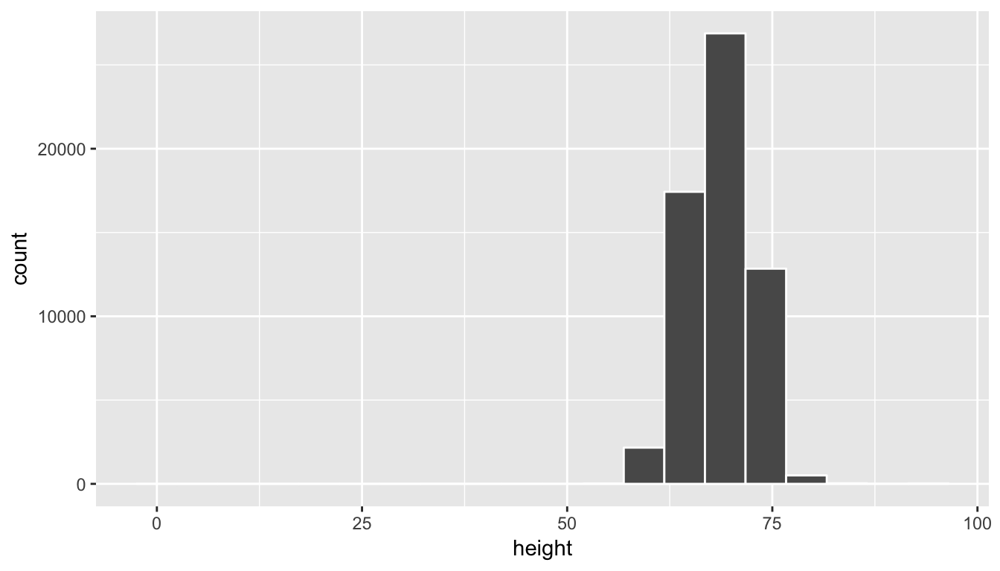
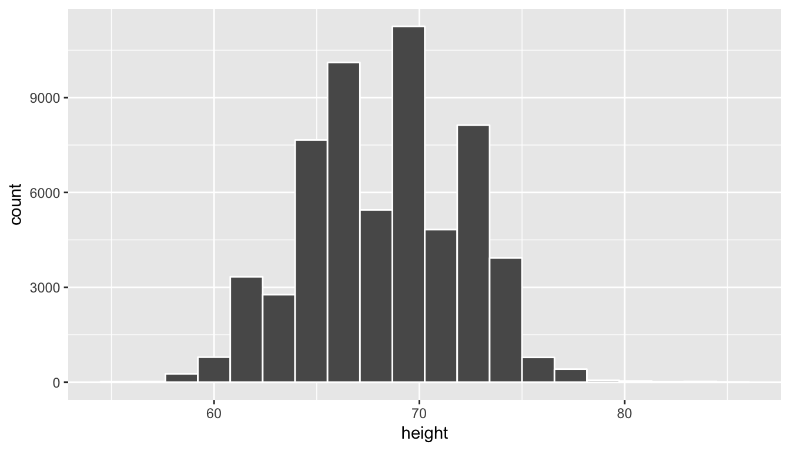
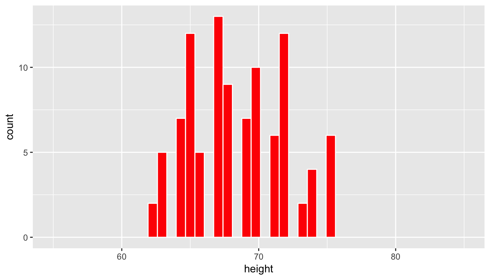
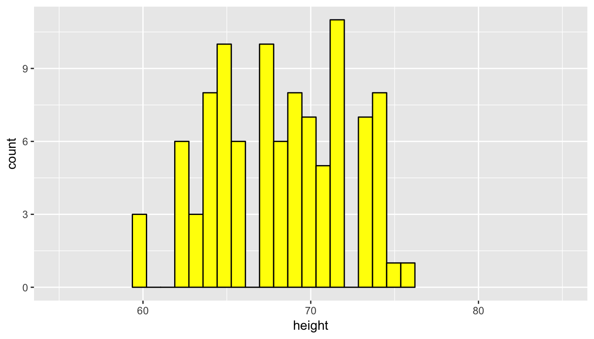
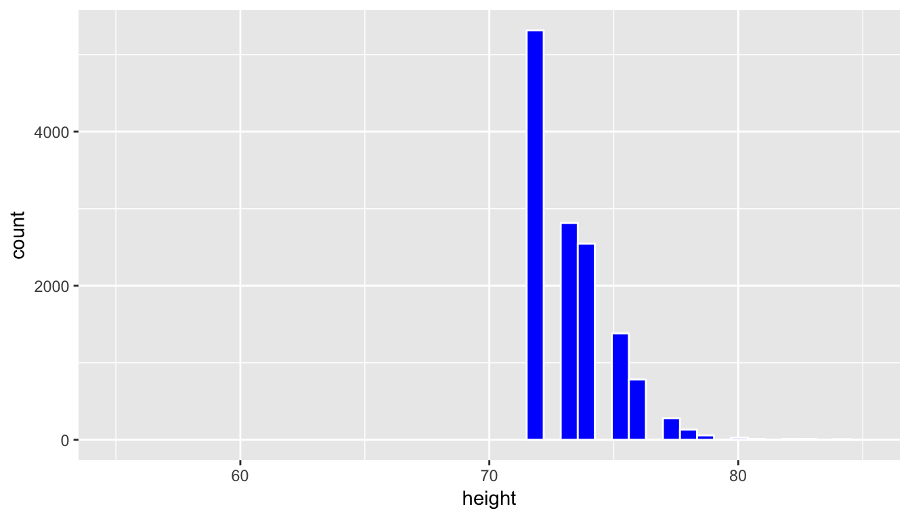
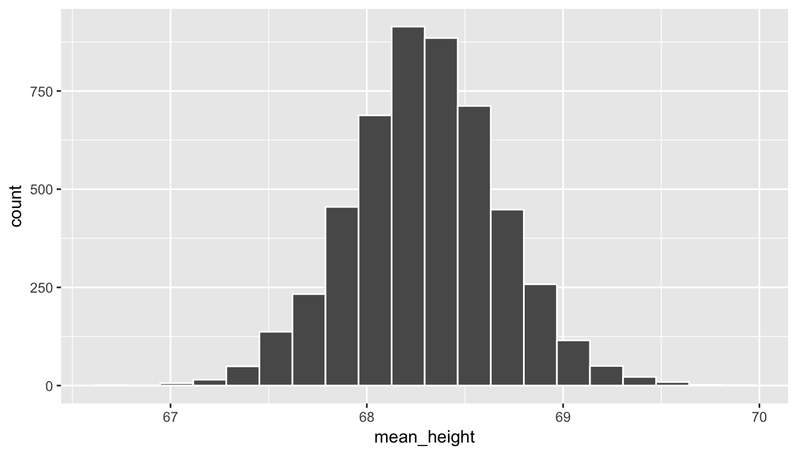

7 Simulating Randomness
In this chapter we will introduce new concepts that will serve as the basis for the remainder of the text: sampling and resampling. We will see that the tools that you learned in the Data Exploration part of this book (tidy data, data visualization, and data wrangling) will also play an important role here. As mentioned before, the concepts throughout this text all build into a culmination allowing you to create better stories with data.
We begin with some helpful definitions that will help us better understand why statistical inference exists and why it is needed. We will then progress with introducing the second of our main datasets (in addition to the nycflights13 data you’ve been working with) about OKCupid dating profiles to see how one can think of the distribution of a sample being an approximation of the distribution of the population. We will also focus on representative, random samples versus convenience samples in this context.
We then shift to a famous example from statistics lore on a lady tasting tea. This section will focus on introducing concepts without a lot of statistical jargon. The chapter will conclude with a summary of the different functions introduced in the mosaic package in this chapter.
Needed packages
Let’s load all the packages needed for this chapter (this assumes you’ve already installed them). If needed, read Section 2.3 for information on how to install and load R packages.
library(dplyr)
library(ggplot2)
library(okcupiddata)
library(mosaic)7.1 Random sampling
Whenever you hear the phrases “random sampling” or just “sampling” (with regards to statistics), you should think about tasting soup. This likely sounds a little bonkers. Let’s dig into why tasting soup is such an excellent analogy to random sampling.
7.1.1 Tasting soup
Figure 7.1: A bowl of Indian chicken and vegetable soup
Imagine that you have invited a group of friends over to try a new recipe for soup that you’ve never made before. As in the image above downloaded from here, you’d like to make a bowl of Indian chicken soup with lots of different kinds of vegetables included.
{kind=link}
You’ve carefully followed along with the recipe but you are concerned that you don’t have a lot of experience making foods from India. It is coming near the end of the prescribed time to cook given in the recipe. You begin to wonder:
- “Did I add too much curry spice?”
- “Are the carrots cooked enough?”
- “Does this actually taste good?”
How can we answer these questions? Does it matter where we take a bite of soup from? Is there anything we should do to the soup before we taste? Is one taste enough?
7.1.2 Common terms
The process of sampling brings with it many common terms that we define now. As you read over these definitions, think about how they each apply to the tasting soup example above.
Definition: population
The population is the (usually) large pool of observational units that we are interested in.
Definition: sample
A sample is a smaller collection of observational units that is selected from the population.
Definition: sampling
Sampling refers to the process of selecting observations from a population. There are both random and non-random ways this can be done.
Definition: representative sample
A sample is said be a representative sample if the characteristics of observational units selected are a good approximation of the characteristics from the original population.
Definition: bias
Bias corresponds to a favoring of one group in a population over another group.
Definition: generalizability
Generalizability refers to the largest group in which it makes sense to make inferences about from the sample collected. This is directly related to how the sample was selected.
Definition: parameter
A parameter is a calculation based on one or more variables measured in the population. Parameters are almost always denoted symbolically using Greek letters such as \(\mu\), \(\pi\), \(\sigma\), \(\rho\), and \(\beta\).
Definition: statistic
A statistic is a calculation based on one or more variables measured in the sample. Statistics are usually denoted by lower case Arabic letters with other symbols added sometimes. These include \(\bar{x}\), \(\hat{p}\), \(s\), \(p\), and \(b\).
Learning check
(LC7.1) Explain in your own words how tasting soup relates to the concepts of sampling covered here.
(LC7.2) Describe a different scenario (not food or drink related) that is analogous to sampling concepts covered here.
Let’s explore these terms for our tasting soup example:
Population - the entire container of soup that we have cooked.
Sample - any smaller portion of soup collected that isn’t the whole container of soup. We could say that each spoonful of soup represents one sample.
Sampling - the process of selecting spoonfuls from the container of soup
Representative sample - A sample we select will only be representative if it tastes like what the soup tastes like in general. If we only select a carrot in our spoonful, we might not have a representative sample.
Bias - As we noted with the carrot selection example above, we may select a sample that is not representative. If you watch chefs cook or if you frequently cook, you’ll be sure to stir the soup before you taste it.
Generalizability - If we stir our soup before we taste a spoonful (and if we make sure we don’t just pick our favorite item in the soup), results from our sample can be generalized (by and large) to the larger pot of soup. When we say “Yum! This is good!” after a couple spoonfuls, we can be pretty confident that each bowl of soup for our friends will taste good too.
Parameter - An example here is could be the proportion of curry entered into the entire pot of soup. A measurement of how salty the pot of soup is on average is also a parameter. How crunchy, on average, the carrots are in the pot of soup is one more example.
Statistic - To convert a parameter to a statistic, you need only to think about the same measurement on a spoonful:
- The proportion of curry to non-curry in a spoonful of soup
- How salty the spoonful of soup is that we collected as our sample
- How crunchy the carrots are in our spoonful of soup
Learning check
(LC7.3) Why isn’t our population all bowls of soup? All bowls of Indian chicken soup?
(LC7.4) Describe a way in which we could select a sample of flights from nycflights13 that is not representative.
(LC7.5) If we treat all of the flights in nycflights13 as the population, give examples of three parameters we could calculate.
(LC7.6) If we treat all of the flights in nycflights13 as the population, give examples of three statistics we could calculate.
(LC7.7) What biases might we see if we only select flights to Boston when we are interested in looking at mean flight delays from NYC?
7.2 Visualizing sampling
Let’s explore how sampling and these other terms relate to working with data and data visualization. Here we introduce the okcupiddata R package (Kim and Escobedo-Land 2016). Note that permission to use this data to create the R package was explicitly granted by OkCupid. More information about this package is available here. The profiles data frame in this R data package contains data about 59,946 OkCupid users who were living within 25 miles of San Francisco, had active profiles on June 26, 2012, were online in the previous year, and had at least one picture in their profile. We will be focusing on the height variable, which corresponds to a self-reported height for each individual on their profile. Note that this is measured in inches.
Let’s take a look at the distribution of height using a histogram and ggplot2:
ggplot(data = profiles, mapping = aes(x = height)) +
geom_histogram(bins = 20, color = "white")
We see here that this being self-reported data has led to the data being a little messy.
Learning check
(LC7.8) Why does the histogram go all the way back to 0 for height and all the way up to 100?
To clean up the data a bit, let’s focus on just looking at heights between 55 inches and 85 inches. Remember that the filter function in dplyr allows us to focus on a subset of rows. The specific subset of rows we are interested in corresponds to the argument to the filter function. We will create a new data frame called profiles_subset that contains all rows with heights between 55 and 85 inclusive.
profiles_subset <- profiles %>% filter(between(height, 55, 85))Next, let’s produce the same histogram as above but using the profiles_subset data frame instead.
ggplot(data = profiles_subset, mapping = aes(x = height)) +
geom_histogram(bins = 20, color = "white")
We can think of this data as representing the population of interest. Let’s now take a random sample of size 100 from this population and look to see if this sample represents the overall shape of the population. In other words, we are going to use data visualization as our guide to understand the representativeness of the sample selected.
set.seed(2017)
profiles_sample1 <- profiles_subset %>%
resample(size = 100, replace = FALSE)The set.seed function is used to ensure that all users get the same random sample when they run the code above. It is a way of interfacing with the pseudo-random number generation scheme that R uses to generate “random” numbers. If that command was not run, you’d obtain a different random sample than someone else if you ran the code above for the first time.
We have introduced the resample function from the mosaic package here (Pruim, Kaplan, and Horton 2017). This function can be used for both sampling with and without replacement. Here we have chosen to sample without replacement. In other words, after the first row is chosen from the profiles_subset data frame at random it is kept out of the further 99 samples. Let’s now visualize the 100 values of the height variable in the profiles_sample1 data frame. To keep this visualization on the same horizontal scale as our original population presented in profiles_subset we can use the coord_cartesian function along with the c function to specify the limits on the horizontal axis.
ggplot(data = profiles_sample1, mapping = aes(x = height)) +
geom_histogram(bins = 20, color = "white", fill = "red") +
coord_cartesian(xlim = c(55, 85))
Learning check
(LC7.9) Does this random sample of height represent the population height variable well? Explain why or why not in a couple of sentences.
We now repeat this process of sampling to look to see how another random sample of height compares to the original population distribution.
profiles_sample2 <- profiles_subset %>% resample(size = 100, replace = FALSE)
ggplot(data = profiles_sample2, mapping = aes(x = height)) +
geom_histogram(bins = 20, color = "black", fill = "yellow") +
coord_cartesian(xlim = c(55, 85))
Remember that a sample can never truly quantify all of the properties of a population since it contains less data and, thus, less information. We can use the overall shape as a good guess as to the representativeness of the sample in regards to the population though. We see that the above two random samples of size 100 have roughly the same shape as the original population height data. Let’s next explore what is known as a convenience sample and how its distribution compares to the population distribution.
A convenience sample is a sample that is chosen conveniently by the person selecting the sample. While certainly less work, convenience samples are generally not representative of the population since they will exclude some (usually large) portion of the population. Let’s look at values of height in our profiles_subset population that are larger than 6 feet tall (72 inches) and have that be the sample we choose.
profiles_sample3 <- profiles_subset %>% filter(height >= 72)
ggplot(data = profiles_sample3, mapping = aes(x = height)) +
geom_histogram(bins = 20, color = "white", fill = "blue") +
coord_cartesian(xlim = c(55, 85))
This is a clear example of a sample that is not representative of the population. The population height variable is roughly symmetric, whereas this distribution is right-skewed. Further, since it only selects large heights it has completely excluded the small and middle heights. We have seen here that data visualization provides an excellent tool in judging the representativeness of a sample.
7.2.1 Sampling distribution
The representativeness of a sample plays an even larger role than just looking at the shapes of distributions. Let’s suppose we were interested in estimating the mean height of all profiles in the profiles_subset data frame. To do so, we could look at the mean of the height variable in the profiles_sample1 data frame:
profiles_sample1 %>% summarize(mean(height)) mean(height)
1 68.45But, we could also use profiles_sample2:
profiles_sample2 %>% summarize(mean(height)) mean(height)
1 68.2Or maybe even profiles_sample3:
profiles_sample3 %>% summarize(mean(height)) mean(height)
1 73.38We see a clear difference here in looking at the mean of height in profiles_sample3 versus profiles_sample1 and profiles_sample2. This comes from the bias that is used in choosing only the top heights for profiles_sample3. If we had chosen to use this sample as our only sample, we would be quite a ways off from what the actual mean height in our population of profiles_subset is.
We also see that even random samples produce means that aren’t exactly the same. This sampling variability can be shown via what is called a sampling distribution. This is defined as the behavior of a statistic under repeated sampling. To build this sampling distribution for this example, we’ve created an interactive app using the shiny R package below that is available at http://ismay.shinyapps.io/okcupidheights/. You can specify the sample size you’d like to work with (100 is chosen by default) and then generate a random sample. You then can see the mean of this generated sample plotted in the bottom visualization. Repeating this process many times, you can start to see the shape of the sampling distribution take form. A screenshot of the app is below, but you are encouraged to go to http://ismay.shinyapps.io/okcupidheights/ and test it out on your own.
Figure 7.2: Sampling distribution app at http://ismay.shinyapps.io/okcupidheights/.
7.2.2 Repeated sampling via do
We have looked at two random samples above, but using mosaic we can repeat this process over and over again with the do function. Below, we repeat this sampling process 5000 times. We can then plot the different values of the sample means to get a sense for what a reasonable range of values for the population parameter mean height is in the profiles_subset data frame.
sample_means <- do(5000) *
(profiles_subset %>% resample(size = 100, replace = FALSE) %>%
summarize(mean_height = mean(height)))ggplot(data = sample_means, mapping = aes(x = mean_height)) +
geom_histogram(color = "white", bins = 20)
Note how the range of sample mean height values is much more narrow than the original range of height in the profiles_subset data frame. We also see a characteristic shape to this distribution of mean_height: the normal curve. This idea is commonly associated with statistics and you hopefully have a good sense of how this distribution comes about. As before, if you aren’t quite sure of this yet, go back and explore the shiny app above a bit more. We see that many values for the sample mean appear near the center of the distribution and a few values appear out in the tails providing the bell-shaped distribution linked with the normal distribution. You’ll see more examples of this in the chapters to come and in Appendix B.
Learning check
(LC7.10) Why do the sample mean values have a much smaller spread than the original population data? You may want to play with the shiny app above a bit to understand why this is the case.
(LC7.11) Why is random sampling so important here to create a distribution of sample means that provide a range of plausible values for the population mean height?
7.3 Simulation
We next will introduce the ideas behind hypothesis testing that we will delve into more formally in the chapters to come. What follows is taken from a book entitled The Lady Tasting Tea (Salsburg 2001):
It was a summer afternoon in Cambridge, England, in the late 1920s. A group of university dons, their wives, and some guests were sitting around an outdoor table for afternoon tea. One of the women was insisting that tea tasted different depending upon whether the tea was poured into the milk or whether the milk was poured into the tea. The scientific minds among the men scoffed at this as sheer nonsense. What could be the difference? They could not conceive of any difference in the chemistry of the mixtures that could exist. A thin, short man, with thick glasses and a Vandyke beard beginning to turn gray, pounced on the problem. “Let us test the proposition,” he said excitedly. He began to outline an experiment in which the lady who insisted there was a difference would be presented with a sequence of cups of tea, in some of which the milk had been poured into the tea and in others of which the tea had been poured into the milk…
So it was that sunny summer afternoon in Cambridge. The lady might or might not have been correct about the tea infusion. The fun would be in finding a way to determine if she was right, and, under the direction of the man with the Vandyke beard, they began to discuss how they might make that determination.
Enthusiastically, many of them joined with him in setting up the experiment. Within a few minutes, they were pouring different patterns of infusion in a place where the lady could not see which cup was which. Then, with an air of finality, the man with the Vandyke beard presented her with her first cup. She sipped for a minute and declared that it was one where the milk had been poured into the tea. He noted her response without comment and presented her with the second cup…
The man with the Vandyke beard was Ronald Aylmer Fisher, who was in his late thirties at the time. He would later be knighted Sir Ronald Fisher. In 1935, he wrote a book entitled The Design of Experiments, and he described the experiment of the lady tasting tea in the second chapter of that book. In his book, Fisher discusses the lady and her belief as a hypothetical problem. He considers the various ways in which an experiment might be designed to determine if she could tell the difference. The problem in designing the experiment is that, if she is given a single cup of tea, she has a 50 percent chance of guessing correctly which infusion was used, even if she cannot tell the difference. If she is given two cups of tea, she still might guess correctly. In fact, if she knew that the two cups of tea were each made with a different infusion, one guess could be completely right (or completely wrong).
Similarly, even if she could tell the difference, there is some chance that she might have made a mistake, that one of the cups was not mixed as well or that the infusion was made when the tea was not hot enough. She might be presented with a series of ten cups and correctly identify only nine of them, even if she could tell the difference.
In his book, Fisher discusses the various possible outcomes of such an experiment. He describes how to decide how many cups should be presented and in what order and how much to tell the lady about the order of presentations. He works out the probabilities of different outcomes, depending upon whether the lady is or is not correct. Nowhere in this discussion does he indicate that such an experiment was ever run. Nor does he describe the outcome of an actual experiment.
It’s amazing that there is no actual evidence that such an event actually took place. This problem is a great introduction into inference though and we can proceed by testing to see how likely it is for a person to guess correctly, say, 9 out of 10 times, assuming that person is just guessing. In other words, is the person just lucky or do we have reason to suspect that they can actually detect whether milk was put in first or not?
We need to think about this problem from the standpoint of hypothesis testing. First, we’ll need to identify some important parts of a hypothesis test before we proceed with the analysis.
Learning check
(LC7.12) What does “by chance” mean in this context?
(LC7.13) What is our observed statistic?
(LC7.14) What is this statistic trying to estimate?
(LC7.15) How could we test to see whether the person is just guessing or if they have some special talent of identifying milk before tea or vice-versa?
Let’s begin with an experiment. I will flip a coin 10 times. Your job is to try to predict the sequence of my 10 flips. Write down 10 H’s and T’s corresponding to your predictions. We could compare your guesses with my actual flips and then we would note how many correct guesses you have.
You may be asking yourself how this models a way to test whether the person was just guessing or not. All we are trying to do is see how likely it is to have 9 matches out of 10 if the person was truly guessing. When we say “truly guessing” we are assuming that we have a 50/50 chance of guessing correctly. This can be modeled using a coin flip and then seeing whether we guessed correctly for each of the coin flips. If we guessed correctly, we can think of that as a “success.”
We often don’t have time to do the physical flipping over and over again and we’d like to be able to do more than just 20 different simulations or so. Luckily, we can use R to simulate this process many times. The mosaic package includes a function called rflip(), which can be used to flip one coin. Well, not exactly. It uses pseudo-random number generation to “flip” a virtual coin. In order for us all to get the same results here, we can set the seed of the pseudo-random number generator. Let’s see an example of this: (Remember to load the mosaic package!)
set.seed(2017)
do(1) * rflip(1) n heads tails prop
1 1 1 0 1This shows us the proportion of “successes” in one flip of a coin. The do function in the mosaic package will be useful and you can begin to understand what it does with another example.
do(13) * rflip(10) n heads tails prop
1 10 4 6 0.4
2 10 5 5 0.5
3 10 5 5 0.5
4 10 7 3 0.7
5 10 5 5 0.5
6 10 7 3 0.7
7 10 5 5 0.5
8 10 4 6 0.4
9 10 7 3 0.7
10 10 2 8 0.2
11 10 4 6 0.4
12 10 5 5 0.5
13 10 4 6 0.4We’ve now done a simulation of what actually happened when you flipped a coin ten times. We have 13 different simulations of flipping a coin 10 times. Note here that heads now corresponds to the number of correct guesses and tails corresponds to the number of incorrect guesses. (This can be tricky to understand at first since we’ve done a switch on what the meaning of “heads” and ``tails" are.)
If you look at the output above for our simulation of 13 student guesses, we can begin to get a sense for what an “expected” sample proportion of successes may be. Around five out of 10 seems to be the most likely value. What does this say about what we actually observed with a success rate of 9/10? To better answer this question, we can simulate 5000 student guesses and then look at the distribution of the simulated sample proportion of successes, also known as the null distribution.
simGuesses <- do(5000) * rflip(10)simGuesses %>%
group_by(heads) %>%
summarize(count = n())# A tibble: 11 x 2
heads count
<dbl> <int>
1 0 5
2 1 53
3 2 194
4 3 585
5 4 983
6 5 1237
7 6 1067
8 7 615
9 8 207
10 9 47
11 10 7We can see here that we have created a count of how many of each of the 5000 sets of 10 flips resulted in 0, 1, 2, \(\ldots\), up to 10 heads. Note the use of the group_by and summarize functions from Chapter 5 here.
In addition, we can plot the distribution of these simulated heads using the ideas from Chapter 3. heads is a quantitative variable. Think about which type of plot is most appropriate here before reading further.
We already have an idea as to an appropriate plot by the data summarization that we did in the chunk above. We’d like to see how many heads occurred in the 5000 sets of 10 flips. In other words, we’d like to see how frequently 9 or more heads occurred in the 10 flips:
ggplot(data = simGuesses, mapping = aes(x = heads)) +
geom_histogram(binwidth = 1, color = "white")Figure 7.3: Histogram of number of heads in simulation - needs tweaking
This horizontal axis labels are a little confusing here. What does 2.5 or 7.5 heads mean? In simGuesses, heads is a numerical variable. Thus, ggplot is expecting the values to be on a continuous scale. We can switch the scale to be discrete by invoking the factor function and using geom_bar instead of geom_histogram:
ggplot(data = simGuesses, mapping = aes(x = factor(heads))) +
geom_bar()Figure 7.4: Barplot of number of heads in simulation
You’ll frequently need to make this conversion to factor when making a barplot with quantitative variables. Remember from “Getting Used to R, RStudio, and R Markdown” (Ismay 2016), that a factor variable is useful when there is a natural ordering to the variable and it only takes on discrete values and not fractional values like 2.5. Our heads variable has a natural ordering: 0, 1, 2, \(\ldots\), 10.
Again, note that the shape of these number of heads follows what appears to be a normal distribution. We’ll see in a related example that if appropriate conditions/assumptions are met with the data that we can expect to see a normal distribution result. When these conditions aren’t met, the simulation methodology we’ve presented here still works well whereas the traditional normal-based methods start to fall apart.
We will delve further into hypothesis testing in the next few chapters. This null distribution in combination with the sampling distribution concept covered earlier will be of utmost importance going forward.
7.4 Review of mosaic simulation functions
In this chapter, we’ve discussed three functions in the mosaic package useful in understanding the stepping stones to statistical inference: do, rflip, and resample. We will also work with the shuffle function in later chapters and we summarize it here for your reference later.
do: Its main use is in replicating a process many times. It has one argumentnwhich specifies how many times to replicate the process. It then uses*, which can be read as “times”, and whatever follows immediately after it as the process.rflip: This is used to simulate the flipping of a coin many times. By default, it flips a fair coin one time giving an equal chance to heads and tails. It is frequently used withdo() *to simulate many coin flips in multiple sets.resample: This is used to sample from a larger dataset with or without replacement. When we are thinking about the concept of random sampling, we sample without replacement. We can also sample with replacement corresponding to the values being replaced into the pool to draw from with the possibility that they are drawn again in the resample. This will be of great importance when we discuss bootstrapping with confidence intervals.shuffle: Its main purpose is to permute the values of one variable across the values of another variable. This acts in much the same way as shuffling a deck of cards and then presenting the shuffled deck to two (or more) players.
Learning check
(LC7.16) Recreate rflip using only the resample function and specifying the appropriate arguments.
(LC7.17) Recreate shuffle using only the resample function and specifying the appropriate arguments.
7.5 Conclusion
7.5.1 What’s to come?
This chapter has served as an introduction into inferential techniques that will be discussed in greater detail in Chapter 8 for hypothesis testing and in Chapter 9 for confidence intervals. In these chapters, we will see how we can use a related concept of resampling when working with the distributions of two groups. All of these concepts will be further reinforced in Chapter 6 as well.
7.5.2 Script of R code
An R script file of all R code used in this chapter is available here.